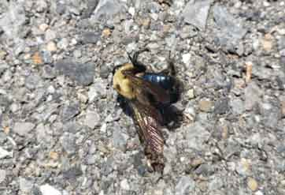
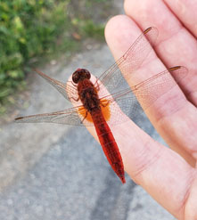

На столе, на холоде и стали, лежал человек... Нет — мясо... Нет... Человек... Нет... Лежало мне неизвестное нЕчто. Я просто стояла, и мой взгляд пожирал это, пытаясь собрать всю информацию, чтобы объяснить то, что я видела. И не находил. Я посмотрела вокруг. Вокруг стола стояли такие же студенты, как я. Они смотрели так же, как я. Они иногда моргали. В их мирах происходил процесс примирения. Некоторым он давался, мне — нет.
Розово-красноватое, совершенно голое тело мужчины средних лет лежало на спине. Без дыхания, без пульса. Ноги — прямые брёвна, торс — клетка, обтянутая кожей, когда-то столь нужный половой орган выглядел нелепым напоминанием об инстинкте продолжения рода, руки-плети и шар головы с нитками волос. Всё было на месте. Всё было из того же, из чего состою и я. Но не было желания коснуться его, заговорить, разбудить... Там некого было будить.Я всё ещё впивалась в это взглядом. Я не могла отвести внимания от сизых пятен на его теле. Трупные пятна. Мы их изучали. Но теперь я видела, как та кровь, которая послушно пульсировала и бежала по артериям и венам, смиренно скопилась в местах, куда её направила гравитация.
Врач-патологоанатом что-то усердно объяснял нашим юным умам, которые смотрели на то, что неизбежно ждёт и их. Он давно прошёл это. А мы были сейчас, здесь, каждый один на один с этим.Так человек или мясо? Сейчас уже мясо, а вчера ещё человек — он грустил, ссорился, мечтал, куда-то спешил и строил свои сокровенные планы. А сейчас он — мясо. Лабораторный дохлый кролик. Нет, не сходится... В нём должно быть то, что есть сейчас во всех нас. Давай, вставай, я ведь тебя вижу, почему ты так покорно лежишь голый на растерзании наших испуганных и любопытных глаз?Он больше никогда не встанет, ничего не скажет, в его мозгу никогда не пробежит искра мысли.
От него веяло холодом — нет, не этим холодом морга, холодом правды. На столе лежала совершенно голая правда. Мёртвая правда. И чем мертвее она была, тем живее была я. Это живое во мне сжалось в точку, в сверхплотный кристалл, из которого светил единственный луч жизненной необходимости понять: что это? А потом — как это? Почему это? Зачем? Кто? Что?.. Вопросы выстроились в белую, непроходимую и обжигающе ледяную стену. Стена замораживала и слепила.
Голос патологоанатома вернул в голую комнату к голому телу. Он что-то говорит о мозге и черепной коробке, и сером веществе, и о фиксации времени смерти. Одна студентка, у которой цвет взгляда уже сменился на любопытство и жажду углубиться в судебную медицину, задавала детальные вопросы, патологоанатом с азартом и важностью отвечал. А на столе лежала закончившаяся жизнь.Все остальные так же молча стояли и смотрели. Я поражалась силе этой студентки. Как ей это удалось? Что в её мозгу не так, как у меня? Почему я в этом склепе собственного шока, а она нет? Я всё ещё смотрю на мясо, теперь точно мясо.

Я пытаюсь мыслью проникнуть в него и почувствовать, что он чувствует сейчас... И чувствую месторасположение органов, причину остановки всей системы, следы её ошибок и сбоев, болезни и травмы, остатки гормонального влияния. Это всё на месте. Но это чувствую я, а не он. Он — мясо.Тут патологоанатом берёт со стола какой-то металлический предмет и собирается производить какие-то действия на глазах мужчины. Всё. Я не выдерживаю. Мои собственные глаза почувствовали приближение холодного, беспощадно любопытного металла, и мозгу стало невыносимо, до боли щекотно. Я переглядываюсь с другом — он в таком же состоянии. Мы извиняемся, мы выходим. Мы не выдержали. Мы проиграли? Мы оказались слишком слабыми? Слишком живыми? Не важно.
На пороге морга нас встретила весна: цветущие каштаны, трели птиц — они зовут друг друга, они летают, размножаются, любят. Сейчас это всё кажется чужим, нарисованным. Мы идём по парку в молчании. Недалеко кладбище, невольно вижу сотни сгнивших тел, с заботой закопанных в землю. Идём дальше...
Город. Люди.Я останавливаюсь. Я смотрю. Я ищу в этом движущемся мясе то, что заставляет их двигаться. Почему они все, все двигаются сами по себе?.. Шевелятся, разговаривают, моргают, смеются. Почему они не лежат простой грудой мышц и костей? В чём разница? Теперь я смотрю на людей как на чудо — непостижимо. Ещё час назад это чудо было для меня ничем, само собой разумеющимся, а сейчас я не понимаю, как это возможно. Как возможна жизнь.И тут я чувствую себя. Я живая. Я живая?! Откуда это во мне? Почему я шевелюсь? Почему я чувствую пространство и это майское нежное солнце — почему оно для меня нежное? Почему этот камень у дороги для меня твёрдый, а та вот девочка — грустная? Почему сейчас для меня перестало существовать вчера и завтра? Почему теперь нет времени, но есть загадка, которую я могу наблюдать, и это уже высший дар?
Ещё около трёх месяцев я смотрела на людей как на трупы, в которых поселилось чудо. Биологические машины, в которые Вселенная вложила своё самое необъяснимое, свой самый сокровенный код.